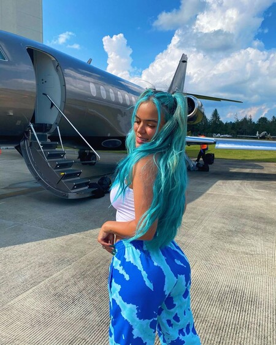
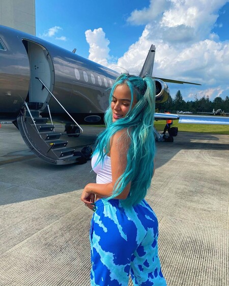

DISCOGRAFIA
Albumes de Estudio
- 2017: Unstoppable
- 2019:Ocean
- 2021: KG0516
GIRAS
- 2017: Girl PowEr Tour
- 2017–2018: Unstoppable Tour
- 2019: Culpables Tour74
- 2019–2020: Ocean World Tour
- 2021: Bichota Tour
- 2022: Bichota Tour Recargado
PREMIOS Y NOMINACIONES
American Music Awards
fue nominada cancion favorita-"TUSA"
Latin American Music Awards
fue nomidana 2 veces "TUSA"
fue nominada "caramelo"
Billboard Latin Music Awards
fue nominada "ELLA MISMA"
Premios Grammy Latinos
fue nominada "MI CAMA"
fue nominada 2 veces"CHINA"
fue nomidana 2 veces "TUSA"
Premios Juventud
fue nominada 2 veces"CHINA"
fue nomidana"TUSA"
fue nominada 2 veces "ELLA MISMA"
fue nominada "AY,DIOS MIO!"
fue nominada 3 veces"BICHOTA"
Premios tu Música Urbano
fue nominada "CHINA"
Premio Lo Nuestro
fue nominada 2 veces "Ella misma"
fue nominada 2 veces "Tusa"
MTV Europe Music Awards
fue nominada 2 veces "Ella misma"
MTV Millennial Awards
fue nominada secreto y ella misma pero ninguna nominacion ganada
MTV Video Music Awards
fue nominada tusa y china pero ninguna nominacion ganada
Premios Nuestra Tierra
fue nomidana 2 veces "TUSA"
fue nomidana "BICHOTA"